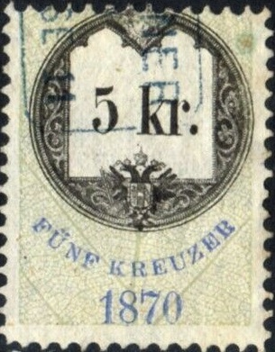
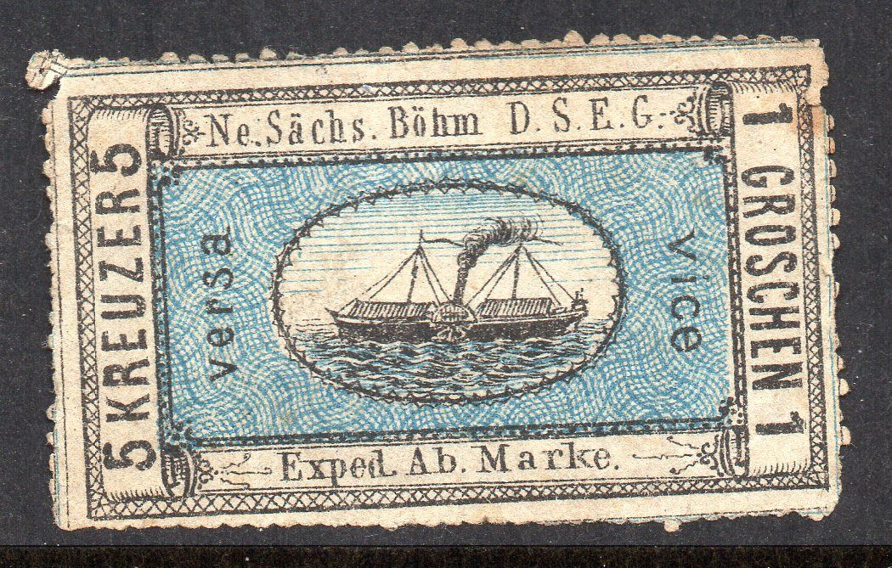

Autriche - Oostenrijk
Return To Catalogue - Issues of 1850-1862 - Issues of 1863-1889 - Issues of 1890-1907 - Issues of 1908-1915 - Issues of 1916-1918 - 1916-1918, miscellaneous - Issues of 1919-1921 - Austrian post offices in Turkey, part 1 - Austrian post offices in Turkey, part 2 - Austrian post offices in Crete - Locals - Postal stationary, telegraph, labels, etc. - Fiscal stamps, overview - Postage due stamps - Newspaper tax stamps - Newspaper stamps of 1851 and forgeries, part 1 - Austria newspaper stamps of 1851 forgeries, part 2 - Newspaper stamps of 1858 and later - Austrian Military post (K.u.K. Feldpost) - Stamps overprinted with russian text - Austrian Italy - Austria, cancels on first issues - Hotel post (Kurhaus Hohen Rinne)
Currency: before 1858 60 Kreuzer = 1 Gulden CM
(Conventions Münze)
1858 to 1900: 100 Kreuzer = 1 Gulden
1900 to 1925: 100 Heller = 1 Krone
After 1925: 100 Groschen = 1 Schilling
Note: on my website many of the
pictures can not be seen! They are of course present in the
catalogue;
contact me if you want to purchase the catalogue.
Austrian stamps used to be used in great parts of Eastern Europe before 1918. For example, they were used in Hungary before 1871. They were also used in what used to be called Czechoslovakia and Yugoslavia, in parts of Poland etc. Many cities changed names after 1918, having germanized names before. A book on these names has been written: 'A Post-Habsburg Index' by H.C. and P.R. Davis, 1975.
Value of the stamps of Austria: most of the stamps of Austria are not very rare. An almost 'complete' collection of Austria used can still be accomplished today (with the exception of some rarities).
Examples:
Austria 1863 to 1889, examples:


Examples:
Example:
Example:

Example

Example

Examples:


example:
examples:


examples:


The fiscal stamps of Austria often have the inscription "STEMPELMARKE" or just "STEMPEL".

Examples of fiscal stamps
Austria Fiscal stamps, overview
Austria Fiscal stamps, arms types from
1850-1893
Austria Fiscal stamps, Franz Joseph issues
example:


Certified genuine stamps
Forgeries exist of these non-issued stamps. These stamps were supposed to be issued in 1946. The 5 g + 3 g was issued in a different design (with '1938' in the upper left corner and a sword instead of the lighting). The 12 g + 12 g was replaced by a stamp showing a hand behind wires. Several other values (6 g + 4 g green, 8 g + 6 g orange, 30 g + 30 g violet, 42 + 42 g brown, 1 S + 1 S red and 2 S + 2 S red) were also issued.
A very nice website on the many reprints of Austria, made from 1866 to 1910 can be found at: http://www.kitzbuhel.demon.co.uk/austamps/reprints/. There is much more information on this website than I can possibly give in my catalogue.
Most reprints differ in paper, colour or perforation from the original stamps. Briefly, there are two types of reprints. First of all, the official reprints made in 1866, 1870, 1884, 1885, 1887, 1889 and 1903. A further official reprint was made in 1904, but these stamps were not available to collectors. Secondly, around 1885 the stamp collector Fellner ordered reprints in small numbers, these reprints are generally known as Fellner-reprints.

(Examples; two Fellner reprints of the newspaper
stamps of 1850, made in 1885)
This 'label' (stamp?) was found on a letter from Spittal to Klagenfurt. Considerable doubt exists about the genuineness of this stamp. More information can be found at: http://www.skillingbanco.cjb.net (with thanks to Lasse Hult who send me this image). I quote from his website:
"1836 Postmaster Laurenz Koscher proposes a postal reform using stamps. His plan is rejected. None the less a letter is found in 1950 that had been sent locally from Spittal to Klagenfurt, that is within Koschers postal district. On the letter is affixed a lithographed 1-kreuzer stamp bearing the inscription Ö.P. (Örtliche Post meaning Local Post). Flanking the central 1, are two crosses, the symbol for "kreuzer". Furthermore the letter is dated 1839 (!) that is to say, one year prior to the issuing of the celebrated Penny Black."
If it is genuine, this stamp would be the first in the world. Only one such stamp was ever found. The current whereabouts of this stamp are unknown to me.
Other website with information about this stamp: http://www.norbyhus.dk/btpbr.html
Bogus ship company labels; "Ne. Sachs. Bohm D.S.E.G. Exped. Ab. Marke".

(Steamship, inscription 'Ne. Sachs. Bohm D.S.F.G. Exped. Ab.
Marke.')
Reduced sizes.
These stamps are bogus, three values exist: 5 kr (=1 gr), 10 kr (=2 gr) and 15 kr (=3 gr). There even seem to exist forgeries of these bogus stamps! The original bogus stamps could have been made by Ferdinand Elb.


{kind=link}
{kind=link}
{kind=link}